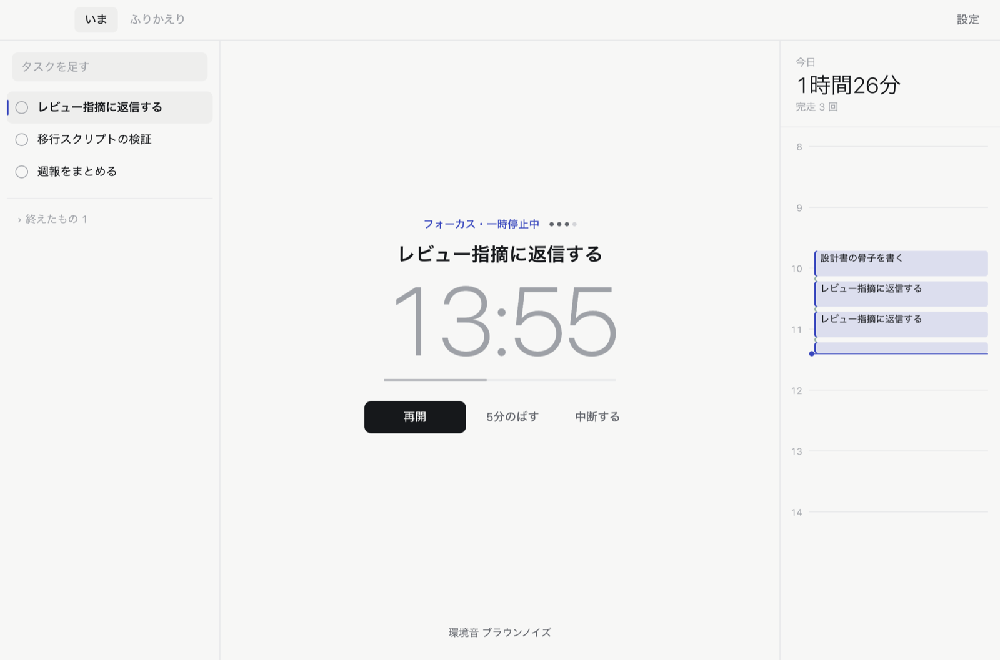
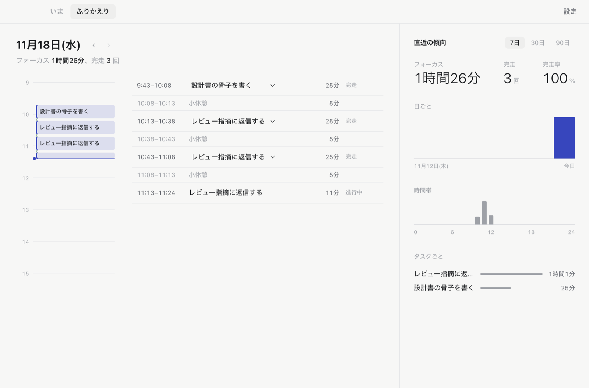
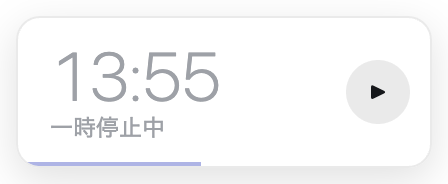

注意を一点に集める
タスクを選んで始めると、空間が深い色に沈み、タスクの一覧と今日の記録が退きます。2 秒半ほど手を止めると、ボタンとカーソルも消えます。
見えなくなるだけで、無くなるわけではありません。端に手を伸ばせば一覧が戻り、一時停止すれば元の明るさに戻ります。
フォーカス
設計書の骨子を書く
25:00
Pomodoro Atelier は、タスクとタイマーのデスクトップアプリです。始めると画面が深い色に沈み、周りが退きます。手を止めると、タスクの名前と残り時間と経過の線だけになります。上の「始める」で試せます。
タスクを選んで始めると、空間が深い色に沈み、タスクの一覧と今日の記録が退きます。2 秒半ほど手を止めると、ボタンとカーソルも消えます。
見えなくなるだけで、無くなるわけではありません。端に手を伸ばせば一覧が戻り、一時停止すれば元の明るさに戻ります。

記録は、実際にタイマーが動いていた区間の集まりです。一時停止・スリープ・アプリの終了で止まっていた時間は、実働に数えません。
タイマーを止めずにタスクを切り替えられ、時間はタスクごとに正しく付きます。乗っているときは「5分のばす」。終えたタスクにチェックを入れると、次の未完了へ移ります。

一日の帯で、どの時間に何をしていたかが分かります。記録のタスクを付け替えたり、消したりもできます。
直近 7 / 30 / 90 日の傾向として、フォーカスした時間、完走した回数と割合、日ごと・時間帯ごと・タスクごとの内訳を見られます。

メニューバーに残り時間が出ます。左クリックで開始と一時停止、右クリックでタスクの切り替え。常に手前に浮かぶ小さなタイマーも、メニューバーから開けます。
区切りには通知とチャイム。タイマーが動いている間だけ、フォーカス用と休憩用の環境音を継ぎ目なく流せます。手持ちの音源も足せます。

記録はこのコンピュータの中だけに保存します。どこにも送りません。JSON (全データ) と CSV (記録・タスク) で書き出せ、JSON から読み込めます。読み込む前のデータは控えとして残します。
以前のバージョン (1.x) のデータは、初回の起動で引き継ぎます。
macOS と Linux は、ターミナルで次の一行を実行します。更新するときも同じです。
curl -fsSL https://raw.githubusercontent.com/Anieca/pomodoro-timer/main/scripts/install.sh | bash/Applications に置いて起動します。署名していないアプリのため、開けるようにダウンロードの印を外します。起動中なら終了させてから入れ替えます。記録には触れません。~/.local/bin/pomodoro-atelier に置きます。| bash -s -- v2.0.0 にします。| キー | はたらき |
|---|---|
| Space | 開始 / 一時停止 |
| N | タスクを足す |
| ⌘ 1 / ⌘ 2 | いま / ふりかえり |
| ⌘ , | 設定 |
| Esc | 設定を閉じる |